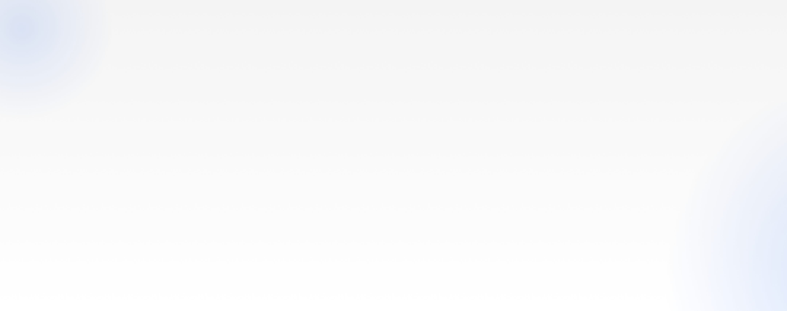
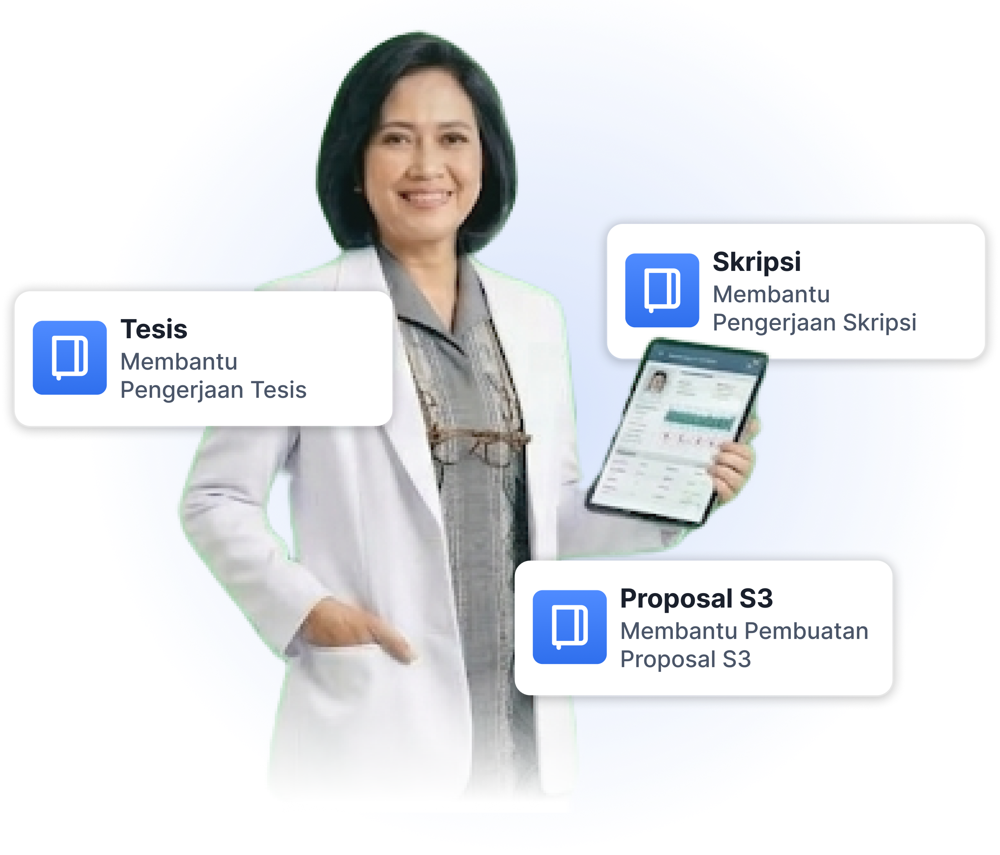
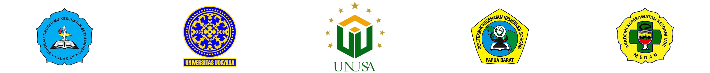
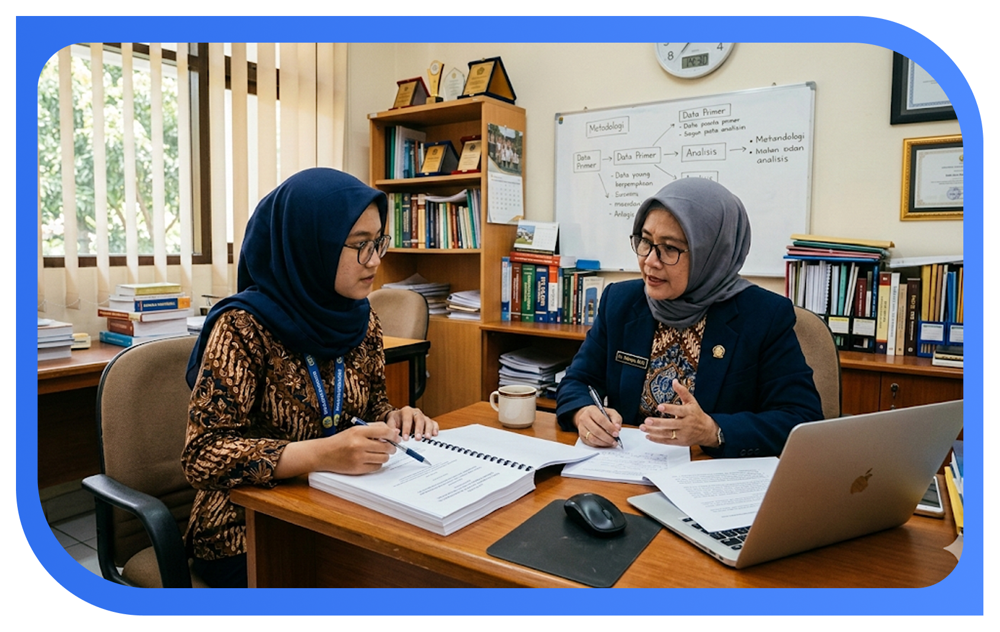

Membantu Mahasiswa dari berbagai kampus untuk menyelesaikan hasil riset di bawah bimbingan para ahli yang sudah terverifikasi



Layanan pendampingan akademik untuk membantu Anda menyusun skripsi
secara terarah, sistematis, dan sesuai
standar ilmiah.
Kelebihan Program Kita
Kami menghubungkan kamu dengan tutor profesional yang ahli, komunikatif, dan sabar dalam membimbing.
Kami menggunakan bimbingan sistematis agar tugas lebih terarah.
Kami menawarkan jadwal bimbingan fleksibel dan dapat disesuaikan baik online maupun offline.
Kami menyediakan bimbingan untuk berbagai jurusan dan bidang studi, dengan tutor untuk setiap kebutuhan.
Setiap sesi bimbingan disesuaikan dengan kebutuhanmu.
Tim konsultan kami berpengalaman membimbing mahasiswa dari berbagai universitas.
Semua paket bimbingan KonsultanEdu hadir dengan fasilitas yang benar-benar membantu proses penelitianmu—
bukan hanya teori, tetapi alat dan dukungan teknis yang kamu perlukan sampai selesai.
Dapatkan bimbingan dari tutor berpengalaman untuk
menyusun jurnal yang lebih terstruktur, jelas, dan siap
dipublikasikan.